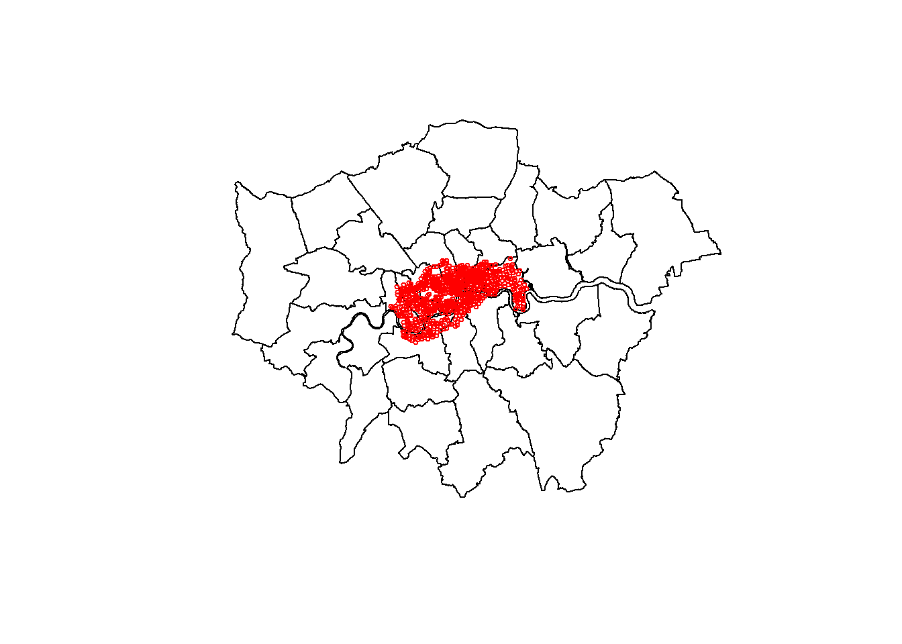

Chapter 4 Geoprocessing in R
For this part, we will use mostly {sf} capabilities. Most spatial functions (if not all) start with the st_ (for spatial type) prefix like in PostGIS.
We will focus on vector data from the {spData} package.
library(dplyr)
library(sf)
library(spData)
library(here)4.1 Read / write
{sf} provides the st_read and st_write functions to access geospatial files. They can operate with any vector driver provided by GDAL.
We will use the data from the {spData}1 package. Let’s see what it contains :
list.files(system.file("shapes", package = "spData")) [1] "auckland.dbf" "auckland.shp"
[3] "auckland.shx" "baltim.dbf"
[5] "baltim.shp" "baltim.shx"
[7] "boston_tracts.dbf" "boston_tracts.prj"
[9] "boston_tracts.shp" "boston_tracts.shx"
[11] "columbus.dbf" "columbus.shp"
[13] "columbus.shx" "cycle_hire.geojson"
[15] "cycle_hire_osm.geojson" "eire.dbf"
[17] "eire.shp" "eire.shx"
[19] "NY8_bna_utm18.gpkg" "NY8_utm18.dbf"
[21] "NY8_utm18.prj" "NY8_utm18.shp"
[23] "NY8_utm18.shx" "sids.dbf"
[25] "sids.shp" "sids.shx"
[27] "wheat.dbf" "wheat.shp"
[29] "wheat.shx" "world.dbf"
[31] "world.gpkg" "world.prj"
[33] "world.shp" "world.shx" We will work on cycle hires in London so let’s get that data.
4.1.1 Cycle hire dataset
cycle_hire <- st_read(system.file("shapes/cycle_hire.geojson", package="spData"))Reading layer `cycle_hire' from data source `D:\Roelandt\Documents\R\win-library\3.5\spData\shapes\cycle_hire.geojson' using driver `GeoJSON'
Simple feature collection with 742 features and 5 fields
geometry type: POINT
dimension: XY
bbox: xmin: -0.2367699 ymin: 51.45475 xmax: -0.002275 ymax: 51.54214
epsg (SRID): 4326
proj4string: +proj=longlat +datum=WGS84 +no_defsHere we can see a couple of functions :
st_read()is the reading function from {sf}system.file()is a function that allow us to look for data in packages, independently of the operating system.
By default, {sf} provides informations when loading the dataset. We can see it contains 742 features and 5 fields. It is points with lat/lon coordinates (we can see it through dataset SRID : 4326). {sf} also provides the bounding box and if possible the proj4string.
Here is the description of the dataset we can find in the documentation:
cycle_hire dataset
Description: Points representing cycle hire points accross London.
Format:
- id Id of the hire point
- name Name of the point
- area Area they are in
- nbikes The number of bikes currently parked there
- nempty The number of empty places
- geometry sfc_POINT
We can see that there is the bike parked, the count of empty slots but not the total amount of bike slots. Let’s create a new slots column for this.
cycle_hire <- cycle_hire %>%
mutate(slots = nbikes + nempty)Let’s load polygon data, in this case London’s boroughs stored in the lnd dataset.
4.1.2 Boroughs of London
This dataset is contained in a R data format so the loading is different.
data(lnd) # load the dataset in memory
lnd # call the dataset to visualise the 10 first featuresSimple feature collection with 33 features and 7 fields
geometry type: MULTIPOLYGON
dimension: XY
bbox: xmin: -0.5103751 ymin: 51.28676 xmax: 0.3340155 ymax: 51.69187
epsg (SRID): 4326
proj4string: +proj=longlat +datum=WGS84 +no_defs
First 10 features:
NAME GSS_CODE HECTARES NONLD_AREA ONS_INNER SUB_2009
1 Kingston upon Thames E09000021 3726.117 0.000 F <NA>
2 Croydon E09000008 8649.441 0.000 F <NA>
3 Bromley E09000006 15013.487 0.000 F <NA>
4 Hounslow E09000018 5658.541 60.755 F <NA>
5 Ealing E09000009 5554.428 0.000 F <NA>
6 Havering E09000016 11445.735 210.763 F <NA>
7 Hillingdon E09000017 11570.063 0.000 F <NA>
8 Harrow E09000015 5046.330 0.000 F <NA>
9 Brent E09000005 4323.270 0.000 F <NA>
10 Barnet E09000003 8674.837 0.000 F <NA>
SUB_2006 geometry
1 <NA> MULTIPOLYGON (((-0.3306791 ...
2 <NA> MULTIPOLYGON (((-0.06402124...
3 <NA> MULTIPOLYGON (((0.01213094 ...
4 <NA> MULTIPOLYGON (((-0.2445624 ...
5 <NA> MULTIPOLYGON (((-0.4118327 ...
6 <NA> MULTIPOLYGON (((0.1586928 5...
7 <NA> MULTIPOLYGON (((-0.404072 5...
8 <NA> MULTIPOLYGON (((-0.404072 5...
9 <NA> MULTIPOLYGON (((-0.1965687 ...
10 <NA> MULTIPOLYGON (((-0.1998964 ...We can see this dataset contains 33 features and 7 fields, in lat/lon coordinates too.
ldn dataset
The boroughs of London
Description : Polygons representing large administrative zones in London
Format:
- NAME Borough name
- GSS_CODE Official code
- HECTARES How many hectares
- NONLD_AREA Area outside London
- ONS_INNER Office for national statistics code
- SUB_2009 Empty column
- SUB_2006 Empty column
- geometry sfc_MULTIPOLYGON
In order to ease spatial calculations, let’s reproject them.
4.2 Reprojection
The Ordnance Survey National Grid is the official one for Great Britain. Its SRID is EPSG:27700.
cycle_hire_27700 <- cycle_hire %>%
st_transform(crs = st_crs(27700))
london_27700 <- lnd %>%
st_transform(crs = st_crs(27700))TO reproject, we used 2 functions:
- st_transform() for the reprojection
- st_crs() to get CRS definition from EPSG code
We also use the pipe operator : %>%, it is useful to pipe data to another function. This is provided by the {magrittr} package through {dplyr} and {sf}.
Now, we can create a quick map to visualize our data. We can use the plot() function to do this. This function is part of base R.
plot(london_27700$geometry) # we just want to plot the geometry column
plot(cycle_hire_27700$geometry,
col = "red", # color
cex = 0.5, # size of symbol
add = TRUE) # important parameter to create multilayer plots
4.3 Joins
We can use two ways to link those datasets together, by attributes, they share their area name (area and NAME) or spatially. For the sake of the exercice, let’s do both.
4.3.1 Join by attributes
Let’s join them with a inner join to see how many have corresponding
cycle_hire_27700 %>% inner_join(
london_27700 %>%
st_drop_geometry(), # we don't need the geometry here
by = c( "area" = "NAME")
)Simple feature collection with 33 features and 12 fields
geometry type: POINT
dimension: XY
bbox: xmin: 523978 ymin: 174408 xmax: 537912.7 ymax: 182972.5
epsg (SRID): 27700
proj4string: +proj=tmerc +lat_0=49 +lon_0=-2 +k=0.9996012717 +x_0=400000 +y_0=-100000 +ellps=airy +towgs84=446.448,-125.157,542.06,0.15,0.247,0.842,-20.489 +units=m +no_defs
First 10 features:
id name area nbikes nempty slots GSS_CODE
1 80 Webber Street Southwark 10 14 24 E09000028
2 108 Abbey Orchard Street Westminster 1 27 28 E09000033
3 118 Rochester Row Westminster 12 1 13 E09000033
4 221 Horseferry Road Westminster 12 3 15 E09000033
5 240 Colombo Street Southwark 9 5 14 E09000028
6 259 Embankment (Horse Guards) Westminster 0 29 29 E09000033
7 267 Regency Street Westminster 7 12 19 E09000033
8 281 Smith Square Westminster 4 12 16 E09000033
9 299 Vincent Square Westminster 6 11 17 E09000033
10 302 Putney Pier Wandsworth 18 10 28 E09000032
HECTARES NONLD_AREA ONS_INNER SUB_2009 SUB_2006
1 2991.340 105.139 T <NA> <NA>
2 2203.005 54.308 T <NA> <NA>
3 2203.005 54.308 T <NA> <NA>
4 2203.005 54.308 T <NA> <NA>
5 2991.340 105.139 T <NA> <NA>
6 2203.005 54.308 T <NA> <NA>
7 2203.005 54.308 T <NA> <NA>
8 2203.005 54.308 T <NA> <NA>
9 2203.005 54.308 T <NA> <NA>
10 3522.022 95.600 T <NA> <NA>
geometry
1 POINT (531832.1 179680.3)
2 POINT (529756.5 179341.1)
3 POINT (529528.7 179079.5)
4 POINT (529880 178976)
5 POINT (531568.5 180203.8)
6 POINT (530351.7 180115.2)
7 POINT (529765.2 178666.4)
8 POINT (530077.3 179091.2)
9 POINT (529433.2 178872.2)
10 POINT (523978 175723.2)We can see that only 33 features matched. That’s poor, let’s try this spatially.
4.3.2 Spatial join
For this, we will try to provide a GSS_CODE for all cycle hire points. We will regroup the data afterwards.
For this, we will select only the GSS_CODE column from london_27700 with the select function from {dplyr}, the geometry will follow.
cycle_hire_27700 <- cycle_hire_27700 %>% st_join(london_27700 %>% select(GSS_CODE))Now if we look at our dataset, there is a GSS_CODE column.
names(cycle_hire_27700)[1] "id" "name" "area" "nbikes" "nempty" "slots"
[7] "GSS_CODE" "geometry"How many points doesn’t have a GSS_code ?
cycle_hire_27700 %>% filter(is.na(GSS_CODE))Simple feature collection with 1 feature and 7 fields
geometry type: POINT
dimension: XY
bbox: xmin: 534188 ymin: 180210.4 xmax: 534188 ymax: 180210.4
epsg (SRID): 27700
proj4string: +proj=tmerc +lat_0=49 +lon_0=-2 +k=0.9996012717 +x_0=400000 +y_0=-100000 +ellps=airy +towgs84=446.448,-125.157,542.06,0.15,0.247,0.842,-20.489 +units=m +no_defs
id name area nbikes nempty slots GSS_CODE
1 134 Wapping High Street Wapping 20 0 20 <NA>
geometry
1 POINT (534188 180210.4)Only one, that’s more better than before ! I don’t know well enough London to fix this. But that is not blocking.
Now to paraphrase Anita Graser : (“Aggregate all the things!” 2017)
4.4 Aggregation
4.4.1 Count
cycle_hire_by_area <- cycle_hire_27700 %>%
filter(!is.na(GSS_CODE)) %>% # remove NAs
st_drop_geometry() %>% # let's put geometry aside
group_by(GSS_CODE) %>% # group data by GSS_CODE
tally(name = "count", sort= TRUE) # Aggregate
cycle_hire_by_area# A tibble: 11 x 2
GSS_CODE count
<fct> <int>
1 E09000033 171
2 E09000030 117
3 E09000020 90
4 E09000032 59
5 E09000013 58
6 E09000007 57
7 E09000022 46
8 E09000028 40
9 E09000019 37
10 E09000001 35
11 E09000012 314.4.2 Sum
cycle_hire_by_area_sum <- cycle_hire_27700 %>%
filter(!is.na(GSS_CODE)) %>% # remove NAs
st_drop_geometry() %>% # let's put geometry aside
group_by(GSS_CODE) %>% # group data by GSS_CODE
summarise(sum = sum(nbikes), count = n()) # Aggregate
cycle_hire_by_area_sum# A tibble: 11 x 3
GSS_CODE sum count
<fct> <int> <int>
1 E09000001 46 35
2 E09000007 518 57
3 E09000012 606 31
4 E09000013 754 58
5 E09000019 398 37
6 E09000020 872 90
7 E09000022 871 46
8 E09000028 756 40
9 E09000030 1795 117
10 E09000032 1083 59
11 E09000033 1336 171We could have use the base function aggregate() which works with {sf} objects.
aggregate(cycle_hire_27700["nbikes"], by = list(cycle_hire_27700$"GSS_CODE"),
FUN = sum, na.rm = TRUE)Simple feature collection with 11 features and 2 fields
Attribute-geometry relationship: 0 constant, 1 aggregate, 1 identity
geometry type: MULTIPOINT
dimension: XY
bbox: xmin: 522502 ymin: 174408 xmax: 538733.2 ymax: 184421
epsg (SRID): 27700
proj4string: +proj=tmerc +lat_0=49 +lon_0=-2 +k=0.9996012717 +x_0=400000 +y_0=-100000 +ellps=airy +towgs84=446.448,-125.157,542.06,0.15,0.247,0.842,-20.489 +units=m +no_defs
First 10 features:
Group.1 nbikes geometry
1 E09000001 46 MULTIPOINT (531116.1 181358...
2 E09000007 518 MULTIPOINT (528392.6 183623...
3 E09000012 606 MULTIPOINT (532312.6 183064...
4 E09000013 754 MULTIPOINT (522502 178727, ...
5 E09000019 398 MULTIPOINT (530339.9 183400...
6 E09000020 872 MULTIPOINT (523651 180842, ...
7 E09000022 871 MULTIPOINT (528837 176040, ...
8 E09000028 756 MULTIPOINT (531235.8 179111...
9 E09000030 1795 MULTIPOINT (533364.4 181747...
10 E09000032 1083 MULTIPOINT (523978 175723.2...If we want to represents our data with proportionnal symbols, we might want to have centroids. {sf} provides two functions in order to do that:
st_centroid()st_point_on_surface()
st_point_on_surface() provides a point randomly in the entry shape. That can be useful for irregular shapes where the centroid might be outside the shape.
4.5 Centroids
boroughs_centroids <- london_27700 %>%
select(NAME, GSS_CODE) %>% # only keep useful columns
st_centroid()You can also do buffers and other geometrical operations like st_union() to merge geometries

Spatial equivalents of logical operators (Lovelace, Nowosad, and Muenchow 2019)
4.6 Geometric binary predicates
{sf} provides numerous geometric binary predicates that can be used with the intersection function.
- st_intersects()
- st_disjoint()
- st_touches()
- st_crosses()
- st_within()
- st_contains()
- st_contains_properly()
- st_overlaps()
- st_equals()
- st_covers()
- st_covered_by()
- st_equals_exact()
- st_is_within_distance()
You can use it alone or with ̀st_join()`.
For example, if we want to the cycle hires contained in the borough of Wandsworth, we will do like this.
london_27700 %>%
filter(NAME == "Wandsworth") %>%
st_contains(cycle_hire_27700)Sparse geometry binary predicate list of length 1, where the predicate was `contains'
1: 293, 576, 581, 587, 588, 590, 592, 594, 596, 598, ...That will return a list of cycle hire points id.
In contrary, if we want to find in which borough the hire point with id 614 is we need to do this :
cycle_hire_27700 %>% filter(id == "614") %>%
st_within(london_27700) # borough at index 22Sparse geometry binary predicate list of length 1, where the predicate was `within'
1: 22To get the borough data, there is some more work to do.
london_27700[unlist(cycle_hire_27700 %>% filter(id == "614") %>% st_within(london_27700)),]Simple feature collection with 1 feature and 7 fields
geometry type: MULTIPOLYGON
dimension: XY
bbox: xmin: 521054.9 ymin: 170381.5 xmax: 530193.7 ymax: 177893.4
epsg (SRID): 27700
proj4string: +proj=tmerc +lat_0=49 +lon_0=-2 +k=0.9996012717 +x_0=400000 +y_0=-100000 +ellps=airy +towgs84=446.448,-125.157,542.06,0.15,0.247,0.842,-20.489 +units=m +no_defs
NAME GSS_CODE HECTARES NONLD_AREA ONS_INNER SUB_2009 SUB_2006
22 Wandsworth E09000032 3522.022 95.6 T <NA> <NA>
geometry
22 MULTIPOLYGON (((523489.6 17...4.7 Saving results
In the first part, we saw that we can read data but we can also write it !
4.7.1 Writing data
To write data, we will use the st_write() function.
It takes the data source name (dsn) as mandatory argument, {sf} will try to find the good driver from the extension (here it is gpkg for GeoPackage).
As we want to save it to GeoPackage2, we also need to provide a layer name : london_boroughs_27700. Repeat for all data you want to save.
london_27700 %>% left_join(cycle_hire_by_area_sum) %>%
st_write(
dsn = here("foss4g_R_workshop.gpkg"),
layer = "london_boroughs_27700",
layer_options = "OVERWRITE=true")Updating layer `london_boroughs_27700' to data source `D:/Roelandt/PERSONNEL/FOSS4G2019_Geoprocessing_with_R_workshop/foss4g_R_workshop.gpkg' using driver `GPKG'
options: OVERWRITE=true
features: 33
fields: 9
geometry type: Multi Polygonboroughs_centroids %>%
left_join(cycle_hire_by_area_sum) %>%
st_write(
dsn = here("foss4g_R_workshop.gpkg"),
layer = "boroughs_centroids_27700",
layer_options = "OVERWRITE=true")Updating layer `boroughs_centroids_27700' to data source `D:/Roelandt/PERSONNEL/FOSS4G2019_Geoprocessing_with_R_workshop/foss4g_R_workshop.gpkg' using driver `GPKG'
options: OVERWRITE=true
features: 33
fields: 4
geometry type: Pointcycle_hire_27700 %>%
left_join(cycle_hire_by_area_sum) %>%
st_write(
dsn = here("foss4g_R_workshop.gpkg"),
layer = "cycle_hire_27700",
layer_options = "OVERWRITE=true")Updating layer `cycle_hire_27700' to data source `D:/Roelandt/PERSONNEL/FOSS4G2019_Geoprocessing_with_R_workshop/foss4g_R_workshop.gpkg' using driver `GPKG'
options: OVERWRITE=true
features: 742
fields: 9
geometry type: PointWe used the here() function as it preserve the project file hierarchy. It works better in Rstudio but it is still useful with Jupyter notebooks.
The data set where joined by their GSS_CODE. You can specify the “by” statement, but for the sake of readability, it is not show here.
Thelayer_options = "OVERWRITE=true" ensure you can write on existing layer, it is optionnal.
print(here()) # print the project directory[1] "D:/Roelandt/PERSONNEL/FOSS4G2019_Geoprocessing_with_R_workshop"list.files(here()) # list the files in the project directory [1] "_bookdown.yml"
[2] "_bookdown_files"
[3] "_output.yml"
[4] "01-intro.Rmd"
[5] "02-R_basics.Rmd"
[6] "03-geoprocessing.Rmd"
[7] "04-maps.Rmd"
[8] "05-summary.Rmd"
[9] "06-references.Rmd"
[10] "book.bib"
[11] "docs"
[12] "foss4g_R_workshop.gpkg"
[13] "FOSS4G2019_Geoprocessing_with_R_workshop.Rmd"
[14] "FOSS4G2019_Geoprocessing_with_R_workshop.Rproj"
[15] "FOSS4G2019_Geoprocessing_with_R_workshop_cache"
[16] "FOSS4G2019_Geoprocessing_with_R_workshop_files"
[17] "images"
[18] "index.Rmd"
[19] "LICENCE.md"
[20] "packages.bib"
[21] "preamble.tex"
[22] "README.md"
[23] "style.css" 4.7.2 Check data
{sf} provides a st_layers() function that is useful to see the content of a dataset.
st_layers(dsn = here("foss4g_R_workshop.gpkg"))Driver: GPKG
Available layers:
layer_name geometry_type features fields
1 london_boroughs_27700 Multi Polygon 33 9
2 boroughs_centroids_27700 Point 33 4
3 cycle_hire_27700 Point 742 9Now that we have data, let’s do some maps on it in the next chapter !
References
“Aggregate all the things!” 2017. https://anitagraser.com/2017/06/08/aggregate-all-the-things-qgis-expression-edition/.
Lovelace, Robin, Jakub Nowosad, and Jannes Muenchow. 2019. Geocomputation with R. CRC Press.
More details on the datasets here : https://cran.r-project.org/web/packages/spData/spData.pdf↩
Because GeoPackage are cool !↩